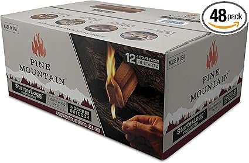
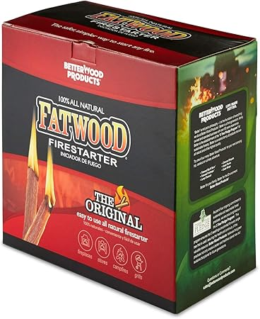
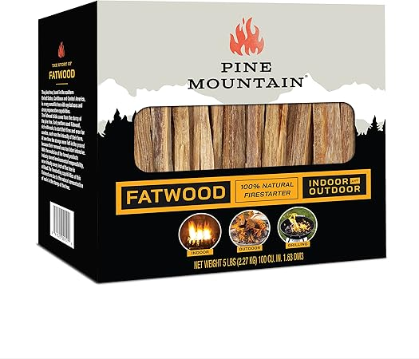
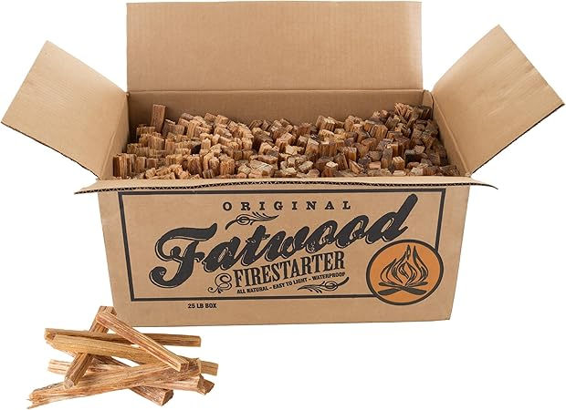

← fatfirewood.com
How to Pick the Right Fatfirewood (2026 Edition)
May 2026
Whether you're upgrading or buying your first, the right fatfirewood in 2026 comes down to a few factors most buyers overlook.
Common Pitfalls
- Overbuying features — Most people use 20% of high-end fatfirewood features. Don't pay for what you'll never touch.
- Skipping negative reviews — A 4.5-star product with durability complaints tells you more than a 5-star product with 8 reviews.
- Not measuring — "It looked bigger online" is the #1 return reason for fatfirewood. Measure twice.
- Waiting for the perfect deal — If you need fatfirewood now, buy now. A 10% discount in 3 months costs you 3 months of use.
Best Value Picks




The Features That Count
- Verified reviews — Focus on 4+ star products with 50+ verified reviews. Ignore anything with only a handful of ratings.
- Compatibility — Always double-check that fatfirewood fits your specific setup before ordering.
- Warranty — Real warranty coverage (1+ year) signals a manufacturer that stands behind their product.
- Build quality — Cheap fatfirewood fall apart fast. Look for solid construction and quality materials.
Final Verdict
2026 has brought quality fatfirewood options at every price point. See our complete guide for current recommendations.
Affiliate Disclosure: As an Amazon Associate, we earn from qualifying purchases. This doesn't affect our recommendations.